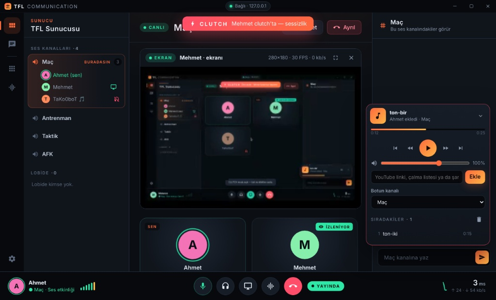
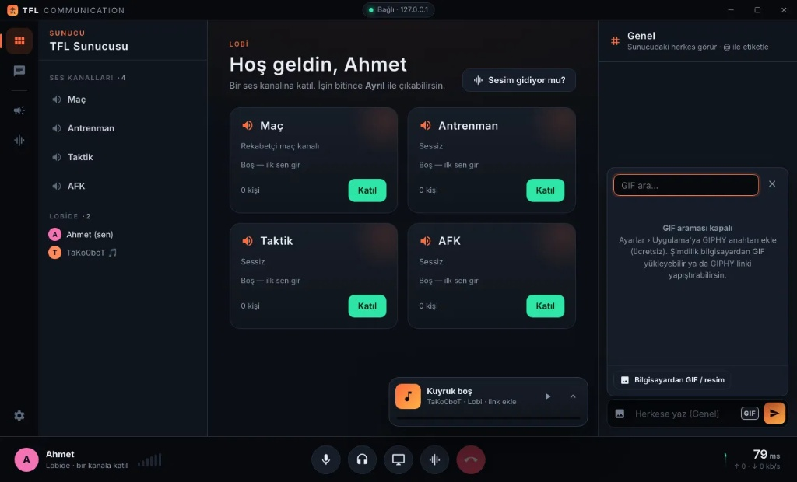

Oyuncular ve
Topluluklar için Güçlü
Sesli İletişim
TFL Communication ile ultra düşük gecikmeli, yüksek kaliteli ve tamamen güvenli ses deneyimini keşfedin. Mumble altyapısıyla arkadaşlarınızla kesintisiz bağ kurun.

